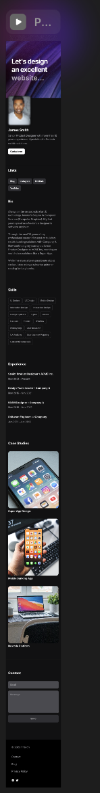
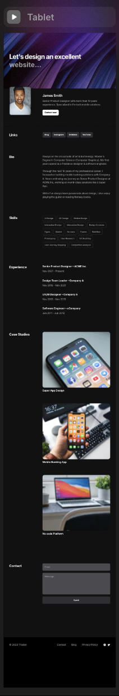
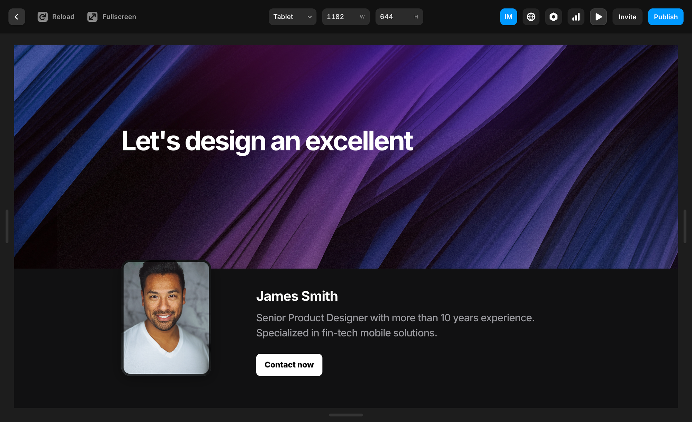
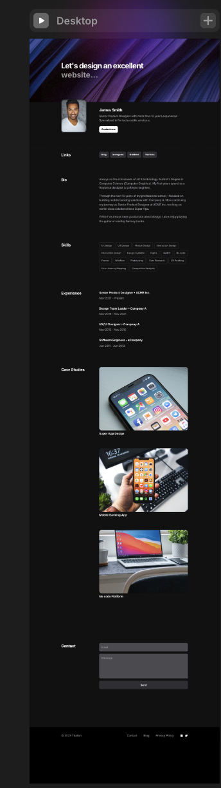

Identidad visual Robin Luz
El logo antiguo era un wordmark corporativo que nadie recordaba. El nuevo tiene un símbolo propio, una historia detrás, y funciona desde los 16px hasta el cartel de una feria energética.
De wordmark a símbolo
El logo antiguo era texto puro — funcional, pero sin carácter. La nueva identidad combina un símbolo que une la bombilla (energía) con un detalle de sombrero que da personalidad, con el wordmark tipográfico.

Wordmark corporativo — texto sin símbolo

Símbolo + wordmark — identidad con carácter
Robin Luz en Optimiza Recursos
Robin Luz no es una marca independiente — es el producto consumer de Optimiza Recursos, una empresa de consultoría energética. La identidad visual tenía que ser lo suficientemente diferente para tener vida propia, pero coherente con el universo de Optimiza.
El logo antiguo completo incluía el wordmark de empresa. Con el rediseño, Robin Luz adquirió un símbolo propio — la bombilla con el detalle del sombrero que refuerza la promesa de marca: hacer el ahorro energético fácil y cercano.

Logo antiguo completo — marca dentro de Optimiza Recursos
Una paleta que trabaja en modo oscuro y claro
Los 4 colores del sistema están diseñados para funcionar en dark mode (app móvil, dashboard) y en light mode (landing). El negro profundo como base, el violeta y el índigo como acción y energía, el blanco como espacio y claridad.

Assets App Store · Google Play — en producción
La identidad en las tiendas
Los assets de las tiendas son la primera impresión del producto antes de la descarga. Diseñé mockups de presentación que combinan el nuevo símbolo de marca con screenshots reales de la app, dentro del sistema de color establecido.
Todos los formatos requeridos por Apple y Google: ícono de la app en múltiples resoluciones, screenshots para iPhone, iPad y Android, y assets de featured banner.
- Ícono de app — todas las resoluciones iOS y Android
- Screenshots para iPhone 15, iPhone SE, iPad
- Assets de presentación para Google Play